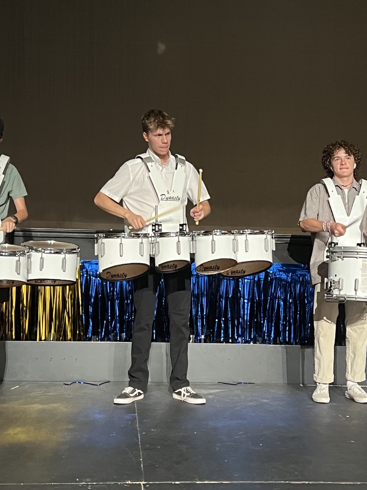

Rhythm & Cadence: My Passion for Drumming
An overview of my musical background, from the high school drumline to the pit orchestra.
Assembly Video ➔My Percussion Background
Drumming has been a fundamental part of my passion and creativity. It picked up during high school, where I immersed myself in every percussion ensemble available, learning better timing, ensemble dynamics, and live stage performance.

Ensemble Timeline & Milestones
Over the years, I have contributed to a variety of diverse musical environments, each requiring distinct things:
-
The High School Drumline & Football Games
- Marched playing the tenors for the fall football games.
- Played cadences to start every assembly and at halftimes.
-
Band & Collaborative Groups
- Joined a band with a few of my friends to goof off and play fun songs.
- Learned how to improvise across different genres and had fun doing it.
-
The Pit Orchestra
- Played percussion and piano in the pit orchestra for all the musicals.
- Provided musical accompaniment for lots of different productions.
Live Performance Footage
To see some drumline cadences in action, watch this clip from the start of one of the assemblies: